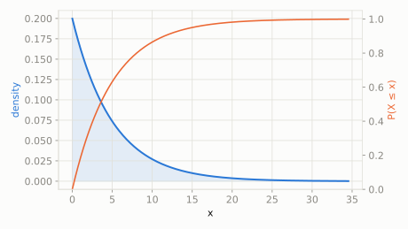

Buses arrive randomly at a stop, on average once every 5 minutes.
If you just arrived at the stop, what's the chance you'll wait more than 8 minutes for the next bus?
scipy.stats.expon
The waiting time between events that happen randomly and independently at a constant average rate -- the continuous-time twin of the Poisson count. It's 'memoryless': no matter how long you've already waited, the time left to wait has the exact same distribution as if you'd just started.
| parameter | default used here | meaning |
|---|---|---|
scale | 5 | mean waiting time (1/rate) |
Buses arrive randomly at a stop, on average once every 5 minutes.
If you just arrived at the stop, what's the chance you'll wait more than 8 minutes for the next bus?
scipy.statsimport scipy.stats as stats
import numpy as np
dist = stats.expon(scale=5)
print('P(wait > 8 min):', round(dist.sf(8), 4))
print('expected wait:', dist.mean())